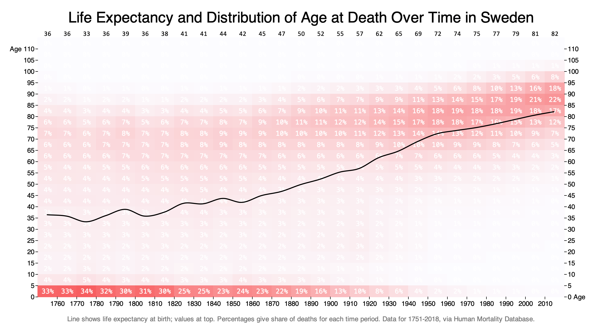

Life expectancy is historically misleading
Thursday August 6, 2020
The modern distribution of age at death is substantially novel. In today's wealthiest countries most people die at an age near their life expectancy, but historically a third of people died as young children and the remainder died over a wide range of ages.
Life expectancy at birth, an average of possible ages at death, is now a measure of central tendency, but even just 100 years ago the distribution of age at death didn't really have a central tendency. Interpreting it as if it did gives a misleading impression of past cultures.

Inspired by Hans Rosling, I went looking for life tables. Appropriately enough, his native Sweden birthed the first National Statistical Office, with 270 years of life tables available. That's enough history to show how the world used to be, and as a rich country Sweden also shows us where the whole world is (hopefully) heading.
Back when life expectancy was mid-thirties, you were more likely to die in your seventies than in your thirties. If you interpret a life expectancy of 36 to mean "most people died around age 36" you might incorrectly imagine a world with very few people over 50.
Or, as Rosling explains it:
"Back in 1800, when Swedes starved to death and British children worked in coal mines, life expectancy was roughly 30 years everywhere in the world. That was what it had been throughout history. Among all babies who were ever born, roughly half died during their childhood. Most of the other half died between the ages of 50 and 70. So the average was around 30. It doesn't mean most people lived to be 30. It's just an average, and with averages we must always remember that there's a spread." (Factfulness, page 54)
This doesn't mean that life expectancy isn't a useful statistic for tracking development! It can be both limited and useful.
I like the visualization I made (above) because it shows enough information to see distributional changes over time.
The question of whether life expectancy will continue to go up is an interesting one. I'm not sure this data has much to say. The length of past lives has an uncertain relationship with theoretical/possible lifespan. Are people living longer, or just not dying earlier? There's also a possible question about quality of life at extreme ages which might be complicating.
Source for the visualization above is on github.